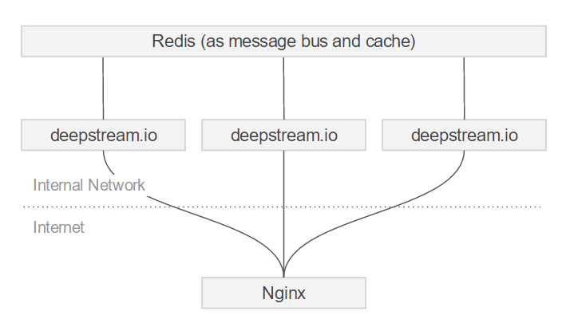

// Client B: Delivery driver's smartphone feeds position into record
const driver = client.record.getRecord('driver/jack')
navigator.geolocation.watchPosition(position => {
driver.set('coords', position.coords)
})
// Client A: Hungry customer sees pizza delivery approach on map
const driver = client.record.getRecord('driver/jack')
driver.subscribe('coords', updateMapPointer)
Same as and AJAX request-response, but with extra capabilities.
client.rpc.provide( 'add-two-numbers', ( data, response ) => {
response.send( data.numA + data.numB );
});
client.rpc.make( 'add-two-numbers', { numA: 7, numB: 13 }, ( err, result ) => {
// result == 20;
});
//Limiting to 50 simultanious image resize tasks at a time
var inProgress = 0;
client.rpc.provide( 'resize-image', ( url, response ) => {
inProgress++;
if( inProgress > 50 ) {
response.reject();
} else {
resizeImage( url ).then(() => {
inProgress--;
response.send( 'done' );
});
}
});
// Client B
client.event.emit('news/sports', 'football is happening')
//Subscribing to an event
client.event.subscribe('news/sports', tweetThis)
function tweetThis(data) {
//callback for incoming events
}
Object/Document/NoSQL databases make more sense than relational ones
js/Java/Obj-C/Swift
Don't use in production
# reading users and passwords from a file auth: type: file options: path: ./users.yml # Path to the user file. Can be json, js or yml hash: 'md5' # the name of a HMAC digest algorithm iterations: 100 # the number of times the algorithm should be applied keyLength: 32 # the length of the resulting key
badri: password: "GPO+dr/0MoA1HAhIYREDc13zSK1/ywsRv2Wwo3gQ1TE=Mh62TJsaGBRORPtorRbyTw==" data: role: developer lakshmi: password: "GPO+dr/0MoA1HAhIYREDc13zSK1/ywsRv2Wwo3gQ1TE=Mh62TJsaGBRORPtorRbyTw==" data: role: scrum-master
type: http options: endpointUrl: https://someurl.com/auth-user permittedStatusCodes: [ 200 ] requestTimeout: 2000
DSL called Valve.
record: #an auctioned item auction/item/$sellerId/$itemId: #everyone can see the item and its price read: true #only users with canBid flag in their authData can bid #and bids can only be higher than the current price write: "user.data.canBid && data.price > oldData.price" #only the seller can delete the item delete: "user.id == $sellerId"

https://deepstream.io/tutorials/integrations/other-digital-ocean/